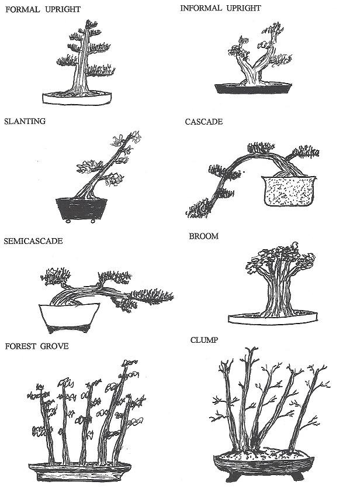

Bonsai Types

Bonsai Styles
It is important for you to remember, as a beginner, that no single bonsai style is the “right” style. Bonsai is meant to be a representation of a tree in nature. Crafting a bonsai masterpiece is tantamount to how YOU view that tree. You are not learning from a bonsai master, you are simply being given instruction on how to create your own bonsai. What you make of it lies simply in your own mind. There are two general styles of bonsai: the classic (koten) and the informal or ‘comic’ (bunjin). In the former, the trunk of the tree is wider at the base and tapers off towards the top; it is just the opposite in the ‘bunjin’, a style more difficult to master. When you start a bonsai, always remember that you are working with a living plant. Look carefully at its natural characteristics and you may discern within them a suitable style, or styles.